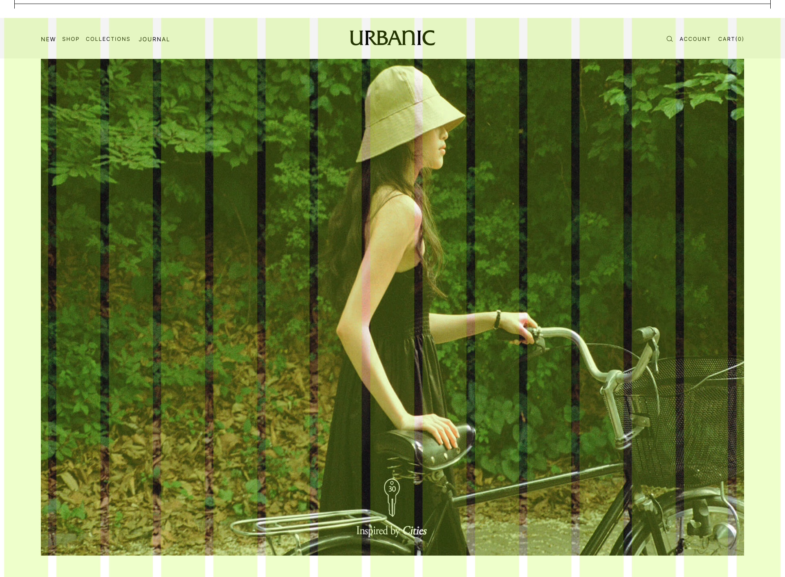

이현경, 오다은, 김나현, 이성우
의류 판매 사이트 같지 않고 UX 봤을때 불폄함이있어 선정
협업과 팀 역할 논의
리디자인 사이트 선정
스타일가이드 및 퍼블리싱 가이드 라인 작업
사이트 디자인
퍼블리싱
팀 내 피드백 후 문제점 수정
git 관리하기
디자인 제작및 수정
about서브 페이지 제작및 js작업
15grid1920px
카카오 API를 통한 매장 위치정보제공
flex를 활용한 레이아웃 정렬
AOS를 사용한 스크롤효과
로딩 .gif제작
.setInterval()를 사용하여 페이지 로딩 효과를 줌
기술서보러가기flex를 사용해서 새로 정렬을 하려고 했는데 효과가 나타나지 않음. 같은 팀원분께 물어보니 높이 값을설정하지 않아 정렬이 안 된 거라고 해서 높이 값을 부여함
내컴퓨터랑 팀원들 컴퓨터에서는 잘 보이던 카카오 지도가 pages로 연결된 링크에서 안 보이는 사태가 발생.개발자 모드로 확인해 보니 Uncaught ReferenceError: kakao is not defined 오류 발견 검색해 보니 도메인 설정을 잘못해서 발행하는 일이라 팀 프로젝트 도메인을 추가
로딩이 끝나고 main 페이지를 확인하는데 원래 마우스에 반응했던 이벤트들이 안 나타남.개발자 모드로 확인해 보니로딩 페이지로 줬던 부분이 맨 위로 올라와 반응하지 못한 거라서 JS에 로딩이 끝나면 그 부분이 사라지는display: "none" 부여했더니 마우스 이벤트가 반응함
코딩컨베이션에 따라 팀원들이 코드를 짜서 나중에 수정하거나 피드백하기 위해 다른 팀원들의 코드를 봤을때 수정하기 수월했습니다.그리고 팀원들과의 의사소통이 잘되어서 초반에 디자인한 대로 사이트 제작을 완료할 수 있었습니다.
사이트 제작과정에서 js나 애미메이션 효과가 적어 아쉬웠다.
내컴퓨에서 잘보이던 kakaoAPI 지도가 github pages에서는 안보이는 상태를 뒤늦개 발견해 해결해서 그부분이 아쉬웠다.
실수 또는 문제점이 발생한 상황에서 서로를 탓하지 않고 소통하여 해결했다
짧은 기간동안 디자인한대로 사이트를 제작했다.
git organizations 사용과정에서 git다루는 법을 다시 복습하고 organizations에 대해 공부하게 되었다
코딩펜을 가지고 자바스크립트를 활용하는 능력이 향상되었다.
두번째팀 프로젝트라 그런지 저번과 같은 상황을 피하기 위해서 팀원들과 자주 소통했다. 그결과 다양한 의견이 나오고 빠른피드백으로 원활하고 빠르게 작업을 할수있었습니다.
그리고 git을 이용한 팀작업을 할때 관리자라는 직함으로 인해 처음에 걱정이 많았는데 걱정했던것보다는 충돌이 안일어났고 push를 하다 문제가 생기면 스스로 해결할수있는 정도의 문제들이라 걱정했건 것보다는 수월하게 작업을 할수있었습니다.
또 페이지마다 어울리는 js나 애니메이션을 넣기 위해 찾아보고 공부할수있는 시간이어서 유익하게 프로젝트 작업을 한것같다